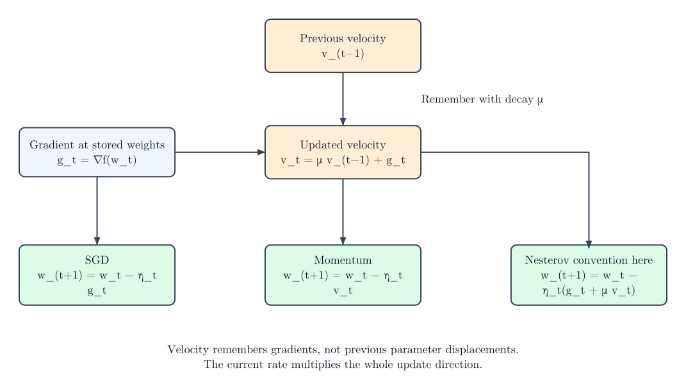
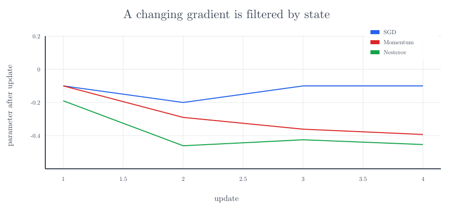
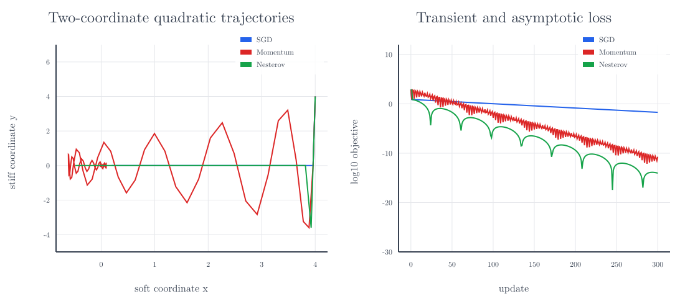
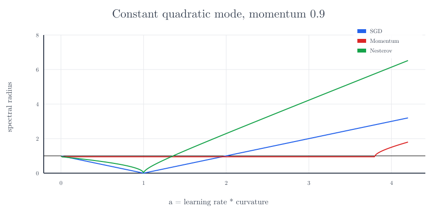
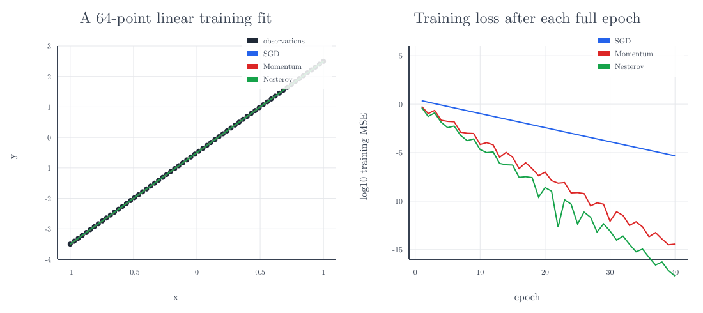

SGD, Momentum and Nesterov: State, Rates and Stability
Abstract
A gradient tells us a local direction, but a training loop must decide how far to move and whether to remember past directions. SGD uses the current gradient; momentum keeps a decaying gradient accumulator; the Nesterov convention here mixes both. We expose those states with four prescribed gradients, derive scalar quadratic stability, and run an explicit minibatch fit. Every comparison names its learning rate and momentum; no universal ordering of optimizers is inferred from one quadratic or one small dataset.
The method
Separate the gradient, its memory and the parameter displacement
The gradient is evaluated at the stored parameter vector before any parameter changes. With initial velocity zero, the three rules are
This is TensorFlow's reparameterized ApplyMomentum convention. It is not an extra forward evaluation at a separately constructed look-ahead point. The stored weights represent that parameterization. When rates change, the current rate multiplies the entire direction; velocity stores gradients, not previously rate-scaled displacements. For constant gradient g, its velocity is \((1-\mu^t)g/(1-\mu)\); for zero new gradients, old velocity decays rather than vanishing immediately. A larger displacement is not necessarily a better optimization step. These deterministic examples use Float64.
The concept diagram below is drawn by dm::graphics::Diagram. Its editable C++
source is the complete block below; regeneration uses the same datamunge toolchain
as the numerical examples. Exports consume the saved local SVG.
#include <dm/dm.hpp>
int main() {
std::filesystem::create_directories("build");
dm::graphics::Diagram diagram;
dm::graphics::DiagramNodeStyle blue;
auto orange = blue;
orange.fill = {255, 237, 213};
auto green = blue;
green.fill = {220, 252, 231};
dm::graphics::DiagramStroke arrow;
arrow.arrow = true;
auto compact = orange;
compact.width = 3.8; compact.height = 1.3;
diagram.node("gradient", {0, 0}, "Gradient at stored weights\ng_t = ∇f(w_t)")
.node("velocity", {6, 0}, "Updated velocity\nv_t = μ v_(t−1) + g_t", compact)
.node("old", {6, 2.6}, "Previous velocity\nv_(t−1)", compact)
.node("sgd", {0, -3}, "SGD\nw_(t+1) = w_t − η_t g_t", green)
.node("momentum", {6, -3}, "Momentum\nw_(t+1) = w_t − η_t v_t", green)
.node("nesterov", {12, -3}, "Nesterov convention here\nw_(t+1) = w_t − η_t(g_t + μ v_t)", green)
.edge("gradient", "velocity").edge("old", "velocity")
.edge("gradient", "sgd").edge("velocity", "momentum")
.path({{7.9, 0}, {12, 0}, {12, -2.35}}, arrow)
.text({9.4, 1.3}, "Remember with decay μ")
.text({6, -5}, "Velocity remembers gradients, not previous parameter displacements.\nThe current rate multiplies the whole update direction.");
diagram.save_svg("build/sgd_updates.svg");
}
One scalar quadratic mode explains stability
For \(f(x)=\lambda x^2/2\), let \(a=\eta\lambda\). SGD multiplies x by 1−a, so strict stability requires 0<a<2. Momentum's state matrix has trace 1+mu−a and determinant mu. The Nesterov map used here has trace (1+mu)(1−a) and determinant mu(1−a). Both follow by substituting the updated velocity into the parameter rule. Their characteristic roots solve
The largest root modulus is the spectral radius. At fixed rate and curvature it is below one precisely in the stable interior. For 0<=mu<1, momentum permits 0<a<2(1+mu); this Nesterov convention permits 0<a<2(1+mu)/(1+2mu). Radius one is a boundary, not convergence. Complex roots yield oscillation, and repeated roots can produce a transient polynomial factor even when their modulus is below one. These statements concern fixed positive quadratic curvatures, not global nonconvex or stochastic convergence. A diagonal quadratic is stable only if all its modes are stable.
Optimizer updates leaves in place without recording update operations in autograd.
It retains the parameter list captured at construction. minimize(loss) computes all
parameter gradients at the same old state. Momentum/Nesterov use one velocity slot per
parameter element; plain SGD has no velocity vector. State is separate from model weights
and can be reset or checkpointed. Changing only weights does not reset velocity.
Simple examples
Four gradients make the convention observable
Start at zero with gradients (1,1,−1,0), rates (.1,.1,.1,.05) and mu=.9. The first update is −.1 for SGD/momentum but −.19 for Nesterov. Momentum's third velocity remains positive (.71) even though that gradient is negative. A zero fourth gradient still moves a momentum-based parameter. The helper records the real tensor optimizer's before/after states; it does not generate the trajectory from a formula.
#include <dm/dm.hpp>
int main() {
const dm::linalg::DenseMatrix<double> gradients(4, 1, {1, 1, -1, 0});
auto plot = dm::graphics::RPlot::create();
dm::dstruct::DataFrame all;
const std::vector<dm::nn::OptimizerKind> kinds = {
dm::nn::OptimizerKind::Sgd, dm::nn::OptimizerKind::Momentum, dm::nn::OptimizerKind::Nesterov};
const std::vector<dm::graphics::RGB> colors = {{37, 99, 235}, {220, 38, 38}, {22, 163, 74}};
for (std::size_t i = 0; i < kinds.size(); ++i) {
dm::nn::OptimizerConfig c;
c.kind = kinds[i];
auto t = dm::nn::optimizer_gradient_trace({0}, gradients, {.1, .1, .1, .05}, c);
const auto name = dm::nn::optimizer_name(kinds[i]);
t.add_column("rule", std::vector<std::string>(t.nrows(), name));
all = i ? all.concat_rows(t) : t;
plot.lines(
t.numeric_column("step").values(), t.numeric_column("after").values(), name, colors[i]);
}
namespace nn = dm::nn;
const auto initial = nn::tensor({1., -2., .5}, {3}, nn::DType::Float64);
for (const auto kind : kinds) {
auto w = initial.clone().requires_grad_();
nn::OptimizerConfig config;
config.kind = kind;
nn::Optimizer optimizer({w}, .1, config);
const auto initial_state = optimizer.state();
auto expected = initial.to_vector<double>();
std::vector<double> velocity(3);
for (int step = 0; step < 20; ++step) {
const double rate = step < 10 ? .1 : .03;
const std::vector<double> gradient{step % 3 == 0 ? -.7 : .3, .1 * (step - 8), 0.};
optimizer.set_learning_rate(rate);
optimizer.step({nn::from_vector(gradient)});
const auto actual = w.to_vector<double>();
for (std::size_t j = 0; j < gradient.size(); ++j) {
velocity[j] = config.momentum * velocity[j] + gradient[j];
double direction = gradient[j];
if (kind == nn::OptimizerKind::Momentum) direction = velocity[j];
if (kind == nn::OptimizerKind::Nesterov) direction += config.momentum * velocity[j];
expected[j] -= rate * direction;
if (!(std::abs(actual[j] - expected[j]) < 1e-12))
throw std::runtime_error("Optimizer diverged from the scalar update");
}
if (optimizer.iterations() != step + 1) throw std::runtime_error("Incorrect update counter");
}
{
nn::NoGradGuard no_grad;
w.copy_(initial);
}
optimizer.load_state(initial_state);
if (w.to_vector<double>() != initial.to_vector<double>() || optimizer.iterations() != 0 ||
optimizer.state().size() != initial_state.size())
throw std::runtime_error("Optimizer reset left parameters, slots or the counter changed");
}
auto x = nn::scalar(1., nn::DType::Float64).requires_grad_();
auto y = nn::scalar(2., nn::DType::Float64).requires_grad_();
nn::Optimizer coupled({x, y}, .1, {.kind = nn::OptimizerKind::Sgd});
double expected_x = 1., expected_y = 2.;
for (int step = 0; step < 10; ++step) {
coupled.minimize(x * y);
const double next_x = expected_x - .1 * expected_y;
expected_y -= .1 * expected_x;
expected_x = next_x;
if (!(std::abs(x.item() - expected_x) < 1e-12 && std::abs(y.item() - expected_y) < 1e-12))
throw std::runtime_error("Coupled gradients used different parameter states");
}
std::print("All three rules matched 20 scalar updates and reset cleanly. Coupled gradients matched 10 synchronous updates.\n\n");
std::filesystem::create_directories("build");
plot.title("A changing gradient is filtered by state")
.x_label("update")
.y_label("parameter after update")
.y_limits(-.6, .2)
.size(900, 420)
.save_svg("build/sgd_stream.svg");
std::print(
"{}\n", all.select({"rule", "step", "rate", "gradient", "velocity", "after"}).to_md(6));
}All three rules matched 20 scalar updates and reset cleanly. Coupled gradients matched 10 synchronous updates.
| rule | step | rate | gradient | velocity | after |
|---|---|---|---|---|---|
| SGD | 1 | 0.10 | 1 | 0.000 | -0.100000 |
| SGD | 2 | 0.10 | 1 | 0.000 | -0.200000 |
| SGD | 3 | 0.10 | -1 | 0.000 | -0.100000 |
| SGD | 4 | 0.05 | 0 | 0.000 | -0.100000 |
| Momentum | 1 | 0.10 | 1 | 1.000 | -0.100000 |
| Momentum | 2 | 0.10 | 1 | 1.900 | -0.290000 |
| Momentum | 3 | 0.10 | -1 | 0.710 | -0.361000 |
| Momentum | 4 | 0.05 | 0 | 0.639 | -0.392950 |
| Nesterov | 1 | 0.10 | 1 | 1.000 | -0.190000 |
| Nesterov | 2 | 0.10 | 1 | 1.900 | -0.461000 |
| Nesterov | 3 | 0.10 | -1 | 0.710 | -0.424900 |
| Nesterov | 4 | 0.05 | 0 | 0.639 | -0.453655 |

Checking the theory
Two curvatures give slow and stiff directions
Use f(x,y)=(x²+100y²)/2, initial (4,4), rate .01 and mu .9. The same settings are shown for all three rules to make their geometry comparable; these are not separately tuned optima. The rate is strictly stable in each stiff mode. The log-loss plot shows transient behaviour as well as eventual contraction. Coordinates are retained at every update, including the initial state, and the whole-objective loss is not a minibatch mean.
#include <dm/dm.hpp>
int main() {
auto path = dm::graphics::RPlot::create(), loss = dm::graphics::RPlot::create();
dm::dstruct::DataFrame results;
const std::vector<dm::graphics::RGB> colors = {{37, 99, 235}, {220, 38, 38}, {22, 163, 74}};
const std::vector<dm::nn::OptimizerKind> kinds = {
dm::nn::OptimizerKind::Sgd, dm::nn::OptimizerKind::Momentum, dm::nn::OptimizerKind::Nesterov};
for (std::size_t k = 0; k < kinds.size(); ++k) {
dm::nn::OptimizerConfig c;
c.kind = kinds[k];
const auto t = dm::nn::optimizer_quadratic_trace({1, 100}, {4, 4}, 300, .01, c);
const auto x = t.filter([](const auto& r) { return r.get_double("coordinate") == 0; }),
y = t.filter([](const auto& r) { return r.get_double("coordinate") == 1; });
const auto name = dm::nn::optimizer_name(kinds[k]);
path.lines(
x.numeric_column("weight").values(), y.numeric_column("weight").values(), name, colors[k]);
auto logloss = x.numeric_column("loss").values();
for (auto& v : logloss)
v = std::log10(std::max(v, 1e-30));
loss.lines(x.numeric_column("step").values(), logloss, name, colors[k]);
auto row = x.tail(1).select({"step", "weight", "loss"});
row.add_column("rule", std::vector<std::string>{name});
row.add_column(
"slow_radius", std::vector<double>{dm::nn::optimizer_mode_radius(kinds[k], .01, .9)});
row.add_column(
"stiff_radius", std::vector<double>{dm::nn::optimizer_mode_radius(kinds[k], 1, .9)});
results = k ? results.concat_rows(row) : row;
}
path.title("Two-coordinate quadratic trajectories")
.x_label("soft coordinate x")
.y_label("stiff coordinate y")
.y_limits(-5, 7);
loss.title("Transient and asymptotic loss")
.x_label("update")
.y_label("log10 objective")
.y_limits(-30, 12);
std::filesystem::create_directories("build");
dm::graphics::RLayout::create(1, 2).add(path).add(loss).size(1100, 490).fit_panels().save_svg(
"build/sgd_quadratic.svg");
std::print(
"{}\n",
results.select({"rule", "step", "weight", "loss", "slow_radius", "stiff_radius"})
.to_md(dm::dstruct::DataFrame::MarkdownOptions{.digits = 9, .scientific = {"loss"}}));
}| rule | step | weight | loss | slow_radius | stiff_radius |
|---|---|---|---|---|---|
| SGD | 300 | 0.196163576 | 1.924007433e-02 | 0.990000000 | 0.000000000 |
| Momentum | 300 | 0.000000425 | 1.917630241e-11 | 0.948683298 | 0.948683298 |
| Nesterov | 300 | 0.000000136 | 9.213203059e-15 | 0.943927963 | 0.000000000 |

The three stability intervals differ
Scan the dimensionless quantity a=rate times curvature at fixed mu=.9. The radius-one line separates strict asymptotic contraction from instability. Momentum reaches its boundary at a=3.8, SGD at two, and this Nesterov convention at 3.8/2.8. A wider interval alone does not imply faster convergence inside it. The Nesterov scalar map at a=1 is nilpotent: its spectral radius is zero, although its first iterate can overshoot before reaching zero on the second step.
#include <dm/dm.hpp>
int main() {
const auto a = dm::seql(.001, 4.2, 300);
auto plot = dm::graphics::RPlot::create();
const std::vector<dm::graphics::RGB> colors = {{37, 99, 235}, {220, 38, 38}, {22, 163, 74}};
dm::dstruct::DataFrame table;
const std::vector<dm::nn::OptimizerKind> kinds = {
dm::nn::OptimizerKind::Sgd, dm::nn::OptimizerKind::Momentum, dm::nn::OptimizerKind::Nesterov};
for (std::size_t i = 0; i < kinds.size(); ++i) {
std::vector<double> radius;
for (double value : a.values())
radius.push_back(dm::nn::optimizer_mode_radius(kinds[i], value, .9));
const auto name = dm::nn::optimizer_name(kinds[i]);
plot.lines(a.values(), radius, name, colors[i]);
}
plot.abline_h(1)
.title("Constant quadratic mode, momentum 0.9")
.x_label("a = learning rate * curvature")
.y_label("spectral radius")
.y_limits(0, 8);
std::filesystem::create_directories("build");
plot.size(900, 440).save_svg("build/sgd_stability.svg");
table.add_column("rule", std::vector<std::string>{"SGD", "Momentum", "Nesterov"});
table.add_column("upper_strict_boundary", std::vector<double>{2, 3.8, 3.8 / 2.8});
std::print("{}\n", table.to_md(9));
}| rule | upper_strict_boundary |
|---|---|
| SGD | 2.000000000 |
| Momentum | 3.800000000 |
| Nesterov | 1.357142857 |

An explicit minibatch training loop
The upstream dataset has 64 equally spaced inputs on [−1, 1] and targets from the line y = 3x − 0.5. Each optimizer gets fresh parameters, the same BatchOrder seed, rate 0.03, and 40 epochs with batches of eight. It minimizes the mean squared error of each batch and tracks the full training loss at the end of each epoch. The known slope and intercept provide the fit check.
#include <dm/dm.hpp>
int main() {
const auto x = dm::nn::arange(0, 64, 1, dm::nn::DType::Float64) * (2. / 63.) - 1.;
const auto y = 3. * x - .5;
auto fit = dm::graphics::RPlot::create(), curve = dm::graphics::RPlot::create();
fit.points(x.to_vector<double>(), y.to_vector<double>(), "observations", {31, 41, 55});
dm::dstruct::DataFrame results;
const std::vector<dm::graphics::RGB> colors = {{37, 99, 235}, {220, 38, 38}, {22, 163, 74}};
const std::vector<dm::nn::OptimizerKind> kinds = {
dm::nn::OptimizerKind::Sgd, dm::nn::OptimizerKind::Momentum, dm::nn::OptimizerKind::Nesterov};
for (std::size_t k = 0; k < kinds.size(); ++k) {
auto w = dm::nn::from_vector(std::vector<double>{0}).requires_grad_(),
b = dm::nn::from_vector(std::vector<double>{0}).requires_grad_();
dm::nn::OptimizerConfig c;
c.kind = kinds[k];
dm::nn::Optimizer opt({w, b}, .03, c);
dm::nn::BatchOrder batches(64, 8, 7);
std::vector<double> epoch, loss;
for (int e = 0; e < 40; ++e) {
batches.begin_epoch();
for (auto ids = batches.next(); !ids.empty(); ids = batches.next()) {
const auto bx = dm::nn::take_rows(x, ids), by = dm::nn::take_rows(y, ids);
opt.minimize(dm::nn::mean(dm::nn::square(bx * w + b - by)));
}
epoch.push_back(e + 1);
loss.push_back(
std::log10(std::max(dm::nn::mean(dm::nn::square(x * w + b - y)).item<double>(), 1e-30)));
}
const auto name = dm::nn::optimizer_name(kinds[k]);
fit.lines(
{-1, 1},
{-w.item<double>() + b.item<double>(), w.item<double>() + b.item<double>()},
name,
colors[k]);
if (!(std::abs(w.item() - 3.) < .005 && std::abs(b.item() + .5) < .005) ||
opt.iterations() != 320)
throw std::runtime_error("Minibatch regression did not recover the reference line");
curve.lines(epoch, loss, name, colors[k]);
dm::dstruct::DataFrame row;
row.add_column("rule", std::vector<std::string>{name});
row.add_column("slope", std::vector<double>{w.item<double>()});
row.add_column("intercept", std::vector<double>{b.item<double>()});
row.add_column("updates", std::vector<double>{double(opt.iterations())});
row.add_column(
"mse", std::vector<double>{dm::nn::mean(dm::nn::square(x * w + b - y)).item<double>()});
results = k ? results.concat_rows(row) : row;
}
fit.title("A 64-point linear training fit").x_label("x").y_label("y").y_limits(-4, 3);
curve.title("Training loss after each full epoch")
.x_label("epoch")
.y_label("log10 training MSE")
.y_limits(-16, 6);
std::filesystem::create_directories("build");
dm::graphics::RLayout::create(1, 2).add(fit).add(curve).size(1100, 490).fit_panels().save_svg(
"build/sgd_minibatches.svg");
std::print(
"{}\n",
results.to_md(dm::dstruct::DataFrame::MarkdownOptions{.digits = 9, .scientific = {"mse"}}));
}| rule | slope | intercept | updates | mse |
|---|---|---|---|---|
| SGD | 2.996306146 | -0.500007720 | 320 | 4.692631239e-06 |
| Momentum | 2.999999898 | -0.500000012 | 320 | 3.736990323e-15 |
| Nesterov | 2.999999998 | -0.500000000 | 320 | 1.874826023e-18 |

Conclusion
Velocity, learning rate and gradient evaluation must be stated together to define an optimizer. The prescribed stream reveals the convention directly; quadratic modes give conditional stability guarantees; and the explicit batch loop shows where gradients, parameters and optimizer state live. These examples do not establish a universal winner. The program also checks one counter increment per update and resets both the weights and optimizer state. With a coupled loss, it verifies that both gradients use the same pre-update weights. Early stopping, schedules, clipping and checkpoint restoration are developed in their own reports.
References
- Polyak, B. T. (1964). Some methods of speeding up the convergence of iteration methods. USSR Computational Mathematics and Mathematical Physics, 4(5), 1–17.
- TensorFlow authors. ApplyMomentum. The accumulated-gradient and reparameterized Nesterov convention matched by this optimizer.